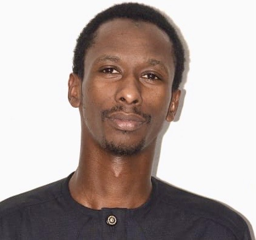

Passionate about Machine Learning, Deep Learning, Computer Vision and Natural Language Processing. Aspiring NLP researcher — building intelligent systems that understand human language.

Master's student in Data Science at the African Institute for Mathematical Sciences (AIMS-Senegal), with a strong background in mathematics and applications from Alioune Diop University of Bambey.
My work spans machine learning, deep learning and computer vision — with a growing focus on Natural Language Processing (NLP). I am deeply interested in how language models understand and generate human language, and I aspire to pursue research in NLP, particularly on low-resource African languages such as Wolof and Pulaar.
As a multilingual speaker (French, English, Wolof), I see NLP not just as a technical challenge but as a way to make AI more inclusive and representative of African linguistic diversity. My long-term goal is to contribute to academic research at the intersection of deep learning and language understanding.
Based in Sandiara / Mbour, Senegal. Always curious, always learning.
Certified internship at Codveda Technologies (ISO 9001:2015). Demonstrated strong Data Science skills, effective communication and exceptional attention to detail. High ability to learn quickly and adapt to new challenges.
Real-time road traffic counting and vehicle tracking system using computer vision. Object detection and tracking on video streams.
Classification of natural scene images (mountain, sea, forest, building…) using CNN — PyTorch and TensorFlow versions. App deployed on Streamlit.
Automatic recognition of African and international dishes using deep learning techniques and data augmentation.
Multi-class classification on CIFAR-10 with CNN from scratch. Hyperparameter tuning, data augmentation and performance analysis.
Skin lesion classification as part of an academic challenge. Evaluated by accuracy and F1 score, with fine-tuning of pre-trained models.
End-to-end data mining project: preprocessing, exploration, clustering and predictive modelling on a real dataset. Detailed result visualisations.
Open to internship, research collaboration or job opportunities in Data Science & Deep Learning. Feel free to reach out!